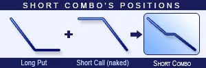

Description and use
Short Combo is the opposite of Long Combo strategy. Short Combo is a synthetic strategy, because it simulates a share-selling situation. To establish the position, the trader buys lower strike Put options and sells higher strike Call options. This investment is short-term and is usually combined with other strategies. The direction of the market is bearish. The strategy is a net credit investment. The loss is unlimited when share prices are increasing.
- Type: Bearish
- Transaction type: Credit
- Maximum profit: Limited
- Maximum loss: Unlimited
- Strategy: Volatility strategy
Opening the Position

Short Combo Option Positions
- Buy lower strike (OTM) Put options.
- Sell higher strike (OTM) Call options (same expiration as the Put options’).
Steps
Entry:
- Make sure the trend is descending.
Exit:
- The strategy should simulate the sale of an underlying security.
- The portfolio should never contain a Long option in the last month before expiration.
Basic Characteristics
- Maximum loss: Unlimited.
- Maximum profit: Lower strike price + Net Credit (or - Net debit).
- Time decay: Time decay has a positive effect because of the Short Call, a negative effect because of the Long Put.
- Breakeven point: Lower strike price (in case of net debit) - Net debit. Higher strike price (in case of net credit) + Net credit.
Advantages and Disadvantages
Advantages:
- The position is similar to a normal Short position when selling shares, but the cost is almost 0.
- Unlimited profit in theory. In practice, the profit is limited because the share price cannot be lower than 0.
Disadvantages:
- The potential loss is unlimited when share prices are increasing.
- High Bid/Offer Spread has a negative influence on the position.
Closing the Position
Sell the Put options and buy back the Call options.
Mitigation of Losses
Sell the position when the share price crosses the Stop Loss limit.
Example
Short Combo strategy example with ABCD traded for $35.10 on 02. 06. 2017. The investor buys a Long Put option which has a strike price of $30.00, expires in August 2017. and costs $0.90 (premium). Then, he sells a Short Call option which has a strike price of $40.00, expires in August 2017. and costs $1.00 (premium).
- Net credit: $0.10
- Maximum loss (risk): Unlimited
- Maximum profit: $30.10
- Breakeven point: $40.10